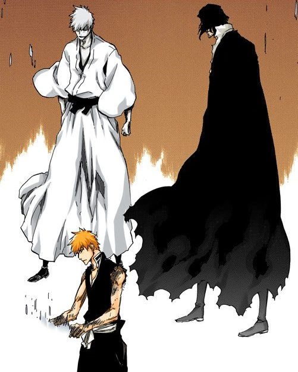

What is Shikai
Shikai is the first relase state of a zanpakuto this occuers when a soul reaper lerans the name of there zanpakuto and each zanpakuto has it's own uneach name such as Zangetsi, Sakanade, nozarashi, kyoka suigetsu, benihime, and zabimaru These are some to name a few and each zanpakuto has it own uneach power. Sakanade can reverse people perseption which means that right becomes left and up becomes down. Kyoka suigetsu can take control of all 5 of people sences sight, touch, taste, hearing, and smell. each zanpakuto has there own powers which means that no soul reaper has the same powers as another soul reaper there zanpakuto's power is complety uniche to that persons zanpakuto and only that zanpakuto.
